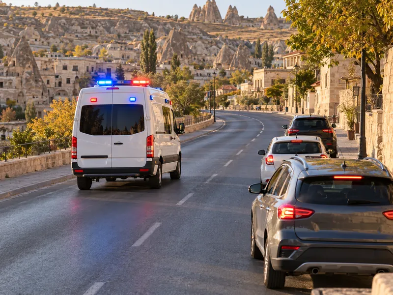

Trafik ve ÇevreKonu 12 / 1742 çıkmış soru
Özel durumlar ve yol kullanıcıları
Yayalara, görme engellilere, okul taşıtlarına, demir yolu geçitlerine, otoyollara, motosiklet ve bisiklet sürücülerine ilişkin özel kuralları; tedbirsiz ve saygısız sürüşü ve araçtan güvenli inip binmeyi anlatır.

1Konu anlatımı
Akılda kalsın
- Işıklı işaret veya görevli bulunmayan, levhayla belirlenmiş yaya ve okul geçitlerinde ilk geçiş hakkı yayalarındır; sürücü yavaşlar, gerekirse durur.
- Beyaz baston taşıyan, kolunda üç siyah yuvarlaklı sarı bant bulunan ya da bir kişi veya köpek yardımıyla yürüyen görme engelliye sürücü yavaşlar, gerekirse durup yardım eder.
- Okul taşıtının arkasındaki DUR ışığı yalnızca öğrenci indirip bindirirken yanar; bu ışığı gören arkadaki sürücü durmak zorundadır.
- Kontrollü demir yolu geçidinde hız azaltılır, bariyer açıksa uygun hızla geçilir; kontrolsüz geçitte uygun mesafede mutlaka durulur.
- Otoyola hızlanma (katılma) şeridinden girilir, yavaşlama (ayrılma) şeridinden çıkılır; bağlantı yollarında geri gitmek, duraklamak ve park etmek yasaktır.
- Motosiklette sürücü arkasında yeterli oturma yeri olsa bile bir kişiden fazlası taşınamaz; sürüş sırasında elde paket taşınamaz.
- İniş eğimli yolda motoru durdurup vitesi boşa alarak inmek yasaktır.
Yayalar ve yaya geçitleri
Görevli kişi veya ışıklı işaret bulunmayan, ancak levhalarla belirlenmiş yaya ve okul geçitlerine yaklaşan sürücüler:
- Hızlarını azaltmak,
- Geçitten geçen veya geçmek üzere olan yayalara ilk geçiş hakkını vermek, gerekirse geçide uygun mesafede durmak,
- Varsa okul geçidi görevlisinin işaret ve talimatlarına uymak zorundadır.
Geçide yaklaşırken hızlanmak, yayayı korna ile uyarıp bekletmek veya korkutmak kurala aykırıdır. Sağa ya da sola dönen sürücü de girdiği yoldaki yaya geçidinde karşıya geçen yayalara yol verir.
Görme engelli yayalar şu işaretlerden tanınır: beyaz baston taşımak, kolunda üç siyah yuvarlaklı sarı bant bulunmak, bir yayanın veya bir köpeğin yardımıyla yürümek. Bu kişiler taşıt yolundaysa bütün sürücüler yavaşlamak, gerekirse durmak ve yardımcı olmak zorundadır.
Yayalar yaya yolu veya banket varsa orada yürür. Her iki tarafında kullanılabilir banket bulunan yollarda yayalar kendi gidiş yönlerine göre sol bankette yürür; böylece karşıdan gelen araçları görür ve tehlikeye karşı önlem alabilirler. Yaya yolu olmayan yerlerde alacakaranlıkta ve gece açık renk giysi, yansıtıcı aksesuar veya el feneri kullanmak görünürlüğü artırır.
Tedbirsiz ve saygısız sürüş
Kamunun huzurunu bozacak veya kişilere zarar verecek şekilde aşağıdaki davranışlar yasaktır:
- Su, çamur ve benzerlerini sıçratmak, atmak, dökmek,
- Diğer yol kullanıcılarını korkutmak veya şaşırtmak (örneğin ani yön değiştirerek yayaları şaşırtmak),
- Sigara külü, izmarit veya başka şeyleri yola atmak,
- Seyir hâlinde cep telefonunu elde tutarak kullanmak,
- Keyfi veya kasıtlı davranışlarla yaya ya da araç trafiğini tehlikeye düşürmek.
Hız kurallarına uymak, yağışta yavaşlamak, tek şerit kullanmak ve yolcuları yol ortasında indirmemek ise doğru davranışlardır.
Okul taşıtları
Okul taşıtlarında diğer taşıtlardan farklı olarak “OKUL TAŞITI” yazısı ve arkada “DUR” ışıklı işareti bulunur. Taşıtta öğrencilere yardımcı olacak bir rehber kişi de bulundurulur.
- DUR ışığı yalnızca öğrenciler inip binerken yakılır ve iniş-biniş bitinceye kadar yanar; fren lambalarıyla birlikte yanacak şekilde bağlanamaz.
- DUR ışığı yandığında arkadan gelen bütün araçlar durur ve ışık sönmeden okul taşıtını geçmez.
Demir yolu (hemzemin) geçitleri
| Geçit türü | Sürücünün yapması gereken |
|---|---|
| Kontrollü (bariyerli veya ışıklı-sesli) | Hızını azaltır; ışıklı ya da sesli DUR uyarısı varsa veya bariyer inmiş ya da inmekteyse durur; bariyer açıksa geçidin durumuna uygun hızla geçer. |
| Kontrolsüz (bariyer ve ışık yok) | Geçmeden önce makul bir mesafede mutlaka durur, iki yönü kontrol eder ve tren gelmediğinden emin olunca geçer. |
Demir yolu geçitlerinde ve yakınında öndeki aracı geçmek yasaktır; geçit üzerinde duraklanmaz ve park edilmez.
Otoyollar ve bölünmüş yollar
- Otoyola girerken hızlanma (katılma) şeridi kullanılır; sürücü burada hızını otoyol trafiğine uydurur ve ana şeritteki araçlara yol vererek akışa katılır.
- Otoyoldan çıkarken yavaşlama (ayrılma) şeridi kullanılır; hız ana akımı yavaşlatmadan bu şeritte düşürülür.
- Otoyol ve bölünmüş yolların bağlantı yollarında geri gitmek, duraklamak ve park etmek yasaktır.
- Emniyet şeridi seyir, geçme veya bekleme için değil; arıza gibi zorunlu hâller ve geçiş üstünlüğüne sahip araçlar içindir.
- Otoyollar yüksek hızlı motorlu taşıt trafiğine ayrılmıştır; yayalar, bisikletler, elektrikli skuterler, lastik tekerlekli traktörler, iş makineleri ve hayvanla çekilen araçlar otoyola giremez.
Bisiklet, motorlu bisiklet ve motosiklet
- Yaya yollarında sürülmeleri ve ikiden fazlasının bir şeritte yan yana sürülmesi yasaktır.
- Motosiklet devamlı iki elle sürülür; sürüş sırasında elde bagaj, paket ve benzeri taşınamaz.
- Sürücü arkasında yeterli oturma yeri yoksa yolcu alınamaz; yer olsa bile bir kişiden fazlası taşınamaz.
- Başka bir araca tutunarak sürmek ve akrobatik hareketler yapmak yasaktır.
Araçtan inip binme ve eğimli yollar
Sürücü aracını gidiş yönüne göre yolun en sağ kenarında durdurur; yolcular aracın sağ tarafından iner ve biner. Araç durmadan kapı açmak, kapılar kapanmadan hareket etmek, çevreyi kontrol etmeden kapı açmak ve taşıt yolu tarafındaki sol kapılardan yolcu indirmek yasaktır.
2Bu konunun soruları
MEB sınavlarında bu konudan çıkmış 42 soru (3 tanesi en az üç sınavda soruldu). Her soruda doğru cevabı ve açıklamasını hemen görürsünüz.
Hangi sorular?
Sıralama